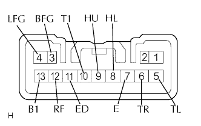

CÔNG TẮC CHẾ ĐỘ ĐÈN PHA > KIỂM TRA |
| 1. KIỂM TRA CỤM CÔNG TẮC CHẾ ĐỘ ĐÈN PHA |
|  |
Đo điện trở của công tắc.
| Nối dụng cụ đo | Tình trạng công tắc | Điều kiện tiêu chuẩn |
| 13 (B1) - 10 (T1) | OFF | 10 kΩ trở lên |
| 12 (RF) - 11 (ED) | OFF | 10 kΩ trở lên |
| 13 (B1) - 10 (T1) | TAIL | Dưới 1 Ω |
| 13 (B1) - 10 (T1) | HEAD | Dưới 1 Ω |
| 12 (RF) - 11 (ED) | HEAD | Dưới 1 Ω |
| Nối dụng cụ đo | Tình trạng công tắc | Điều kiện tiêu chuẩn |
| 11 (ED) - 9 (HU) | FLASH | Dưới 1 Ω |
| 11 (ED) - 8 (HL) | FLASH | Dưới 1 Ω |
| 11 (ED) - 8 (HL) | ĐÈN CỐT | Dưới 1 Ω |
| 11 (ED) - 9 (HU) | HI BEAM | Dưới 1 Ω |
| 11 (ED) - 8 (HL) | HI BEAM | Dưới 1 Ω |
| Nối dụng cụ đo | Tình trạng công tắc | Điều kiện tiêu chuẩn |
| 7 (E) - 6 (TR) | Rẽ phải | Dưới 1 Ω |
| 7 (E) - 5 (TL) | Trung gian | 10 kΩ trở lên |
| 7 (E) - 6 (TR) | Trung gian | 10 kΩ trở lên |
| 7 (E) - 5 (TL) | Rẽ trái | Dưới 1 Ω |
| Nối dụng cụ đo | Tình trạng công tắc | Điều kiện tiêu chuẩn |
| 4 (LFG) - 3 (BFG) | OFF | 10 kΩ trở lên |
| 4 (LFG) - 3 (BFG) | ON | Dưới 1 Ω |